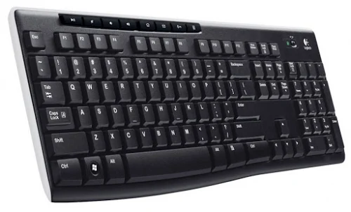
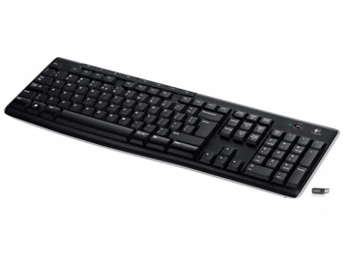

- Nhà sản xuất: Logitech
- Bảo hành: 24 tháng
- Tình trạng: Mới 100%
- Giá bán: 379.000 VNĐ
Bàn phím Logitech K270 sở hữu vóc dáng cổ điển với phím Spacebar được làm cong vòm ra một ít tạo cảm giác mềm mại trên mặt bằng chung. Tất cả chất liệu làm nên K270 là nhựa và các phím được phủ lên thêm một lớp chống tia cực tím giúp bảo vệ chữ trên các phím không bị mờ hoặc phai nhòa theo năm tháng
Bàn phím Logitech K270 Full-size có 104 phím. Ngoài ra còn có thêm 1 hàng phím chức năng gồm 8 phím giúp bạn thao tác mở/tắt nhạc, mở calculator,… nhanh chóng
Keyboard Logitech K270 là một sản phẩm kết nối không dây Wireless tiện lợi với đầu cắm USB Logitech Unifying nhỏ gọn
Được áp dụng công nghệ không dây 2.4GHz tiên tiến, bạn có thể sử dụng bàn phím Logitech K270 trong phạm vi 10m hoàn toàn loại bỏ tình trạng trễ, mất kết nối và nhiễu sóng (tùy vào môi trường).
Bàn phím không dây logitech k270 có tuổi thọ pin có thể lên tới 24 tháng nếu như bạn sử dụng tiết kiệm. Ở mặt trước của bàn phím có bố trí một nút On/Off bạn có thể sử dụng để ngắt kết nối Wireless khi ngủ hoặc không làm việc để tiết kiệm pin cho bàn phím hơn nhé.